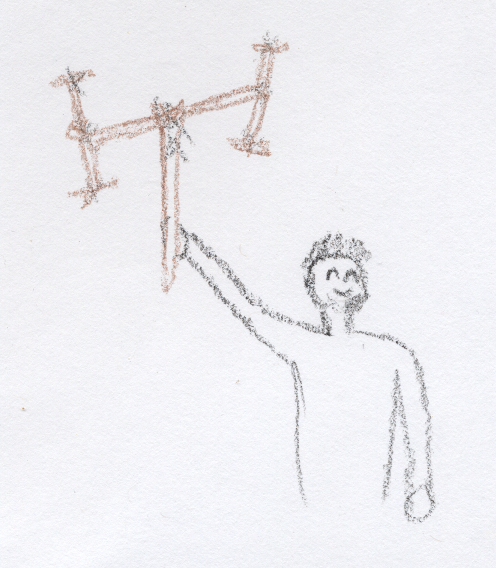
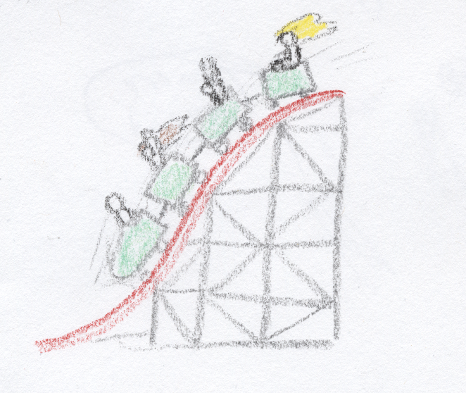
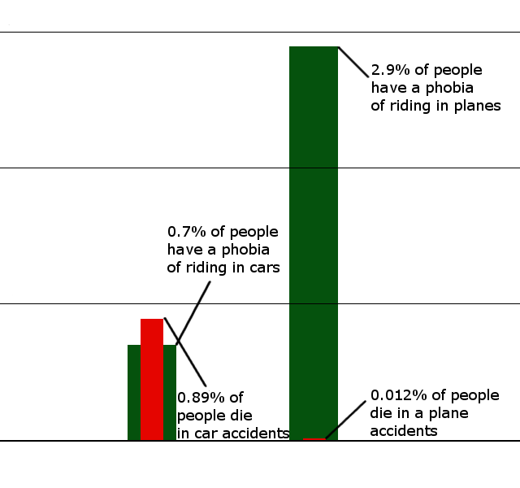
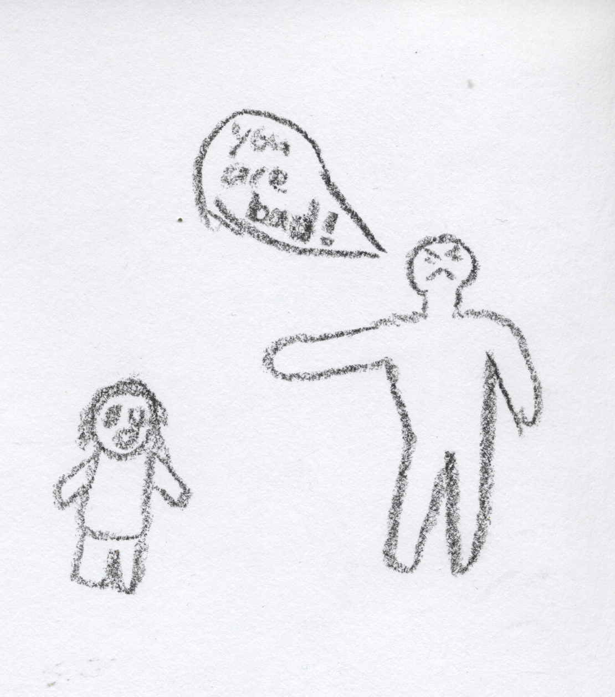

Sometimes your mind will tell you to do things that you don’t know why, or can no longer remember why. These are called your instincts.
If you are all by yourself, and don’t know much about the world yet, it’s a very good idea to do what your instincts tell you.

If your instincts tell you to do something like build an interesting thing out of some sticks, it is a good idea. It might help you in the future in ways you don’t know yet.
If you are alone and lost at night, your instincts will probably tell you to start crying and try to find someone to help. It is probably a very good idea to listen to your instincts!
Sometimes your instincts will tell you to do something that is a bad idea.
If a fire alarm goes off and everyone is scared, your instincts might tell you to go hide, but, if there really is a fire, you should get out of the building!
It can sometimes be very hard to figure out when you should listen to your instincts and when you should not. You should be very proud of yourself when you finally start to get the hang of it!
Exercise: Draw a line from the play activity that your instincts may tell you to do; to a grownup activity it might help with when you get older.
| Play Activity | Grownup Activity |
|---|---|
| Play doctor with your parents | Protecting your dear ones from danger |
| Stacking some blocks | Caring for little baby dear ones |
| Caring for babydolls | Build a shelter for your dear ones |
| Battling invisible monsters | Invent an important part of modern civilization |
| Invent a new toy | Help your your parents when they start to get old and need someone to care for them |
It can sometimes be hard to not listen to your instincts.

If you see something that looks scary, but you know from past experiences it is actually safe and harmless, you may challenge yourself by choosing to do the scary thing.
Sometimes your instincts will tell you to do something that is bad, but you can’t think of anything else to do.
If you see two of your friends calling someone else names they don’t like, your instincts will probably tell you to join your friends to call them names too. Even if you know it’s bad, you still might want to listen! You might be afraid of getting called names and that won’t happen if you are calling other people names.
Other reasons you might call other people names:
If you overcome your instincts and choose to do nothing, you should be very proud of yourself! You can always think of something different to do later, so, next time, you can be ready!
Even if you are uncomfortable doing nothing, just remember, calling people names hurts them deep inside. It hurts someone more to be called names than it does you to do nothing.
Sometimes grownups have trouble overcoming their instincts too.
If they are scared of something that is not very dangerous, they have what is called a “phobia”.

A common phobia for grownups is flight phobia: fear of flying on airplanes.
Everyone usually gets different instincts and maybe even phobias as they get older. Even after you get the hang of the ones you have now, new ones may come along.
Discovering you have an instinct you don’t want is very hard. You might be sad if you find a new one, but you should also be proud of yourself. Discovering it is the first step to getting the hang of it!
Exercise: Underline the action that your instincts might make hard to resist doing. Circle the action that your experience might tell you is a better idea.
| Eating unhealthy food | Eating healthy food |
| Watching cute cartoon kittens | Playing with an old friendly house cat that’s missing an arm |
| Letting a dentist fix your teeth | Hiding from the dentist |
| Running in a panic if you catch fire | Stop drop and roll if you catch fire |
| Helping someone who is stuck and can’t move | Making fun of someone who is stuck and can’t move |
| Keeping everything you ever had even if there is no space for you | Only keeping things that are still nice and useful |
Figuring out when you should use your instincts and when you shouldn’t might take a lot of time. Figuring out how to overcome them might take some time too.

Sometimes, people will try to make you feel bad for listening to your instincts and something bad happens, even when it was the best you could think of at the time.
If they do, you should feel sorry for them, because they were probably treated the same before, and can’t think of a better way to treat you.
They might need help reminding them to be patient if they lose their patience. If you feel comfortable, you should say something like: ”I’m sorry. I was trying my best. Do you forgive me?”
You can say and feel different things when it looks like someone is trying to make you feel bad. As you get older you might find different ways right for the situation and right for you.
| What to think or feel when they say you are bad | What to do when they say you are bad |
|---|---|
| Feel sorry for them, because they were probably treated the same before. | Say “I’m sorry, I was trying my best, do you forgive me?” |
| They have an idea for you to think or act in a different way that might be worth a try, but they don’t quite know how to tell you. | Reflect their feelings: “It sounds like you are feeling impatient and need me to understand that you would like me to do things different next time. Is that right?” |
| They don’t know how much their words could hurt, but, maybe, they would like to know. | Tell them how it makes you feel: “When you said that to me, it made me feel very discouraged. Could you stop saying it like that?” |
If you are still able to be nice and talk to someone, even after they say you are bad, you should be very very VERY proud of yourself! Very few people can do that.
This lesson is ment to be followed up with questions at a later time in life.
Click to see the reasons for each passage and follow up questions